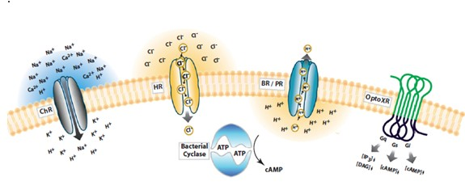

Abstract:
In neuroscience field, both observation and perturbational methods are important for understanding the function of nervous system. During the last century, the observational methods have made great advances which leave the perturbation-al methods behind. The development and application of Optogenetics, however, are making up the gaps. By its reliable Optogenetical tools, or inserting light-sensitive channel proteins into the nervous cells, researchers can now trigger firing specific neurons under the stimulation of light. In this article, we will discuss the function and application of light-sensitive ion channels in neuroscience in details, which may provide useful insights into neuroscience, although Optogenetics is getting off to a flying start.
Key words: Optogenetics, light-sensitive ion channel, neuroscience.
Figure. The process of different ion channels . Channelrhodopsins conduct cations and depolarize neurons upon illumination (left). Halorhodopsins conduct chloride ions into the cytoplasm upon yellow light illumination (center).Bacteriorhodopsin conduct protons into the cytoplasm under low- oxygen(center).OptoXRs are rhodopsin-GPCR (G protein–coupled receptor) chimeras that respond to green (500 nm) light with activation of the biological functions dictated by the intracellular loops used in the hybrid (right).